|
Roda JC - FC Utrecht (1-1) 23 april 2004 |
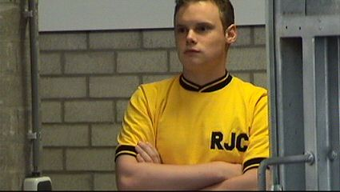
Een trotse eigenaar van een retro Roda-shirt.
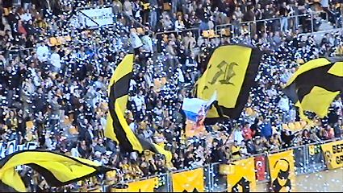
Sfeeractie op de westtribune.
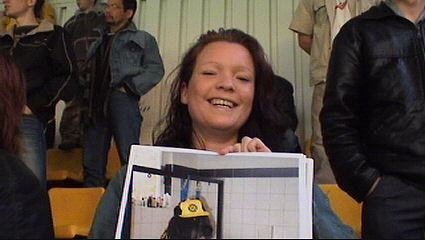
Lizzy showt een foto van haar Roda-dog. De volledige foto komt
in de volgende Voice of Kaalhei.
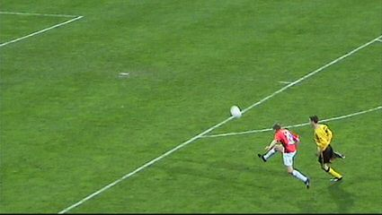
Tanghe is Brouwers te vlug af.
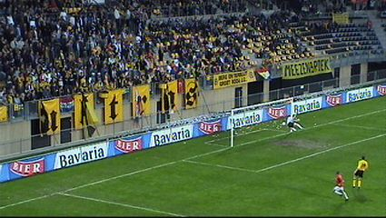
Hij lobt de bal over Kujovic: 0-1 (13').
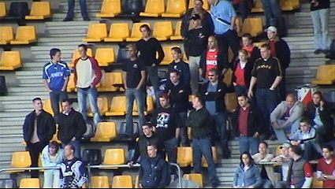
De ongeveer 100 Utrecht-supporters kwamen aldus vroeg in een
juich-stemming.
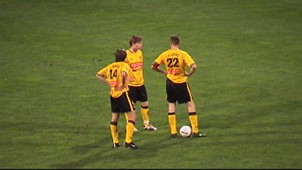
Behalve solide spel van Van Dessel en baltovenarij van Kone
viel er in de eerste helft niks te genieten. Hier een vrijetrap die
niks gaat opleveren.
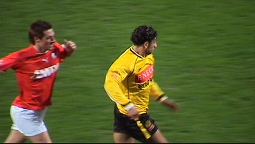
Fatih Sonkaya speelde in plaats van de geschorste Senden. Het
zou wel eens zijn laatste wedstrijd voor Roda kunnen zijn. Hij
gaat namelijk naar Galatasaray. Daar zal hij ander voetbal
moeten etaleren want vanavond was zijn spel diep bedroevend.
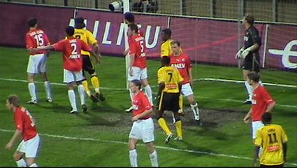
Drukte in de zestien bij een hoekschop voor Roda.
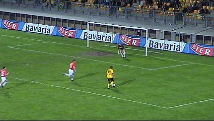
Aardige kans voor Redan wordt via een Utrechtbeen corner.
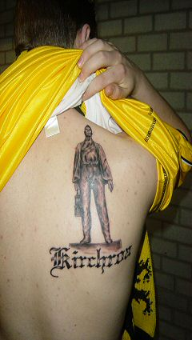
Een fraaie tattoo van Kevin H.
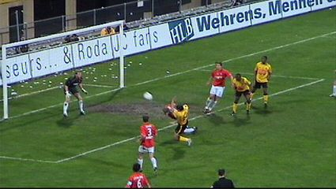
De eerste helft was erg saai maar na de rust speelt Roda de
FC Utrecht volledig zoek, zonder echt gevaarlijk te worden.
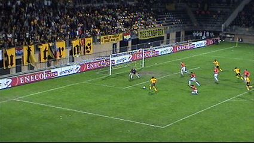
Een van de vele kansen, maar de bal wilt er maar niet in.
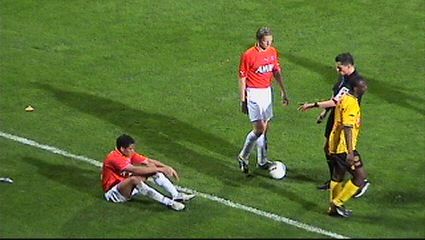
Naarmate de tijd vordert krijgen de Utrechtenaren alweer last
van allerlei verlammende virussen.
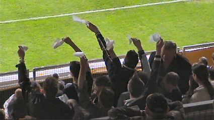
De Cleenex supporters wuiven naar Wiljan Vloet.
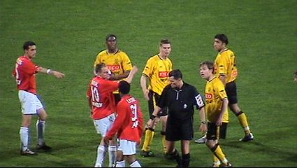
Van Sichem trok een gele kaart vanavond: voor Van Dessel.
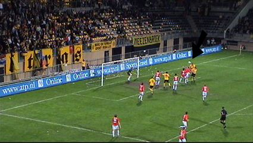
Uit een voorzet van werkpaard Filipovic kan invaller Cristiano
de gelijkmaker inkoppen: 1-1 (90').
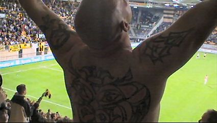
Uitzinnige vreugde bij deze supporter uit vak Z16.
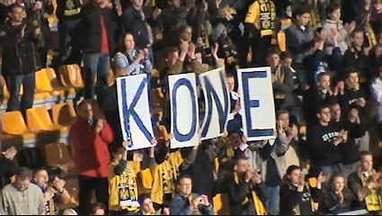
Kone is een balgoochelaar die geheid een fantastische toekomst
tegemoet gaat.
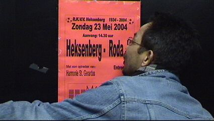
Deze meneer geilt nu al op 23 mei....
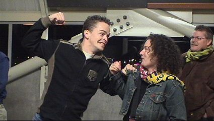
D'r Roedie en Blitzmädel vechten nu ook letterlijk om de eerste
plaats in het FP-manupilatie klassement.
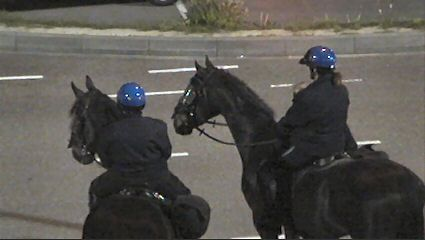
Gelukkig waren er blauwhelmen in de buurt zodat verdere
escalatie uitbleef.
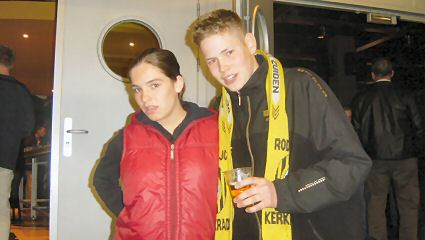
Berry met zijn wannabe vriendin (keep the faith).
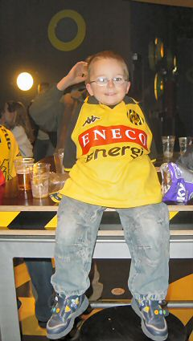
Mini-fan van Roda JC.....
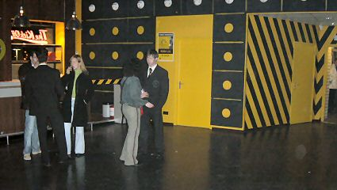
Van Dijk en Roemgens bezochten het supportershome. Helaas
op het moment dat bijna iedereen alweer weg was.
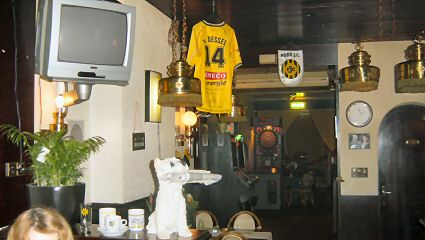
Afbieren in 't Brandje te Heerlen.
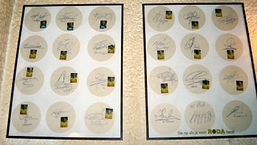
Misschien het meest Roda-minded café in Limburg.
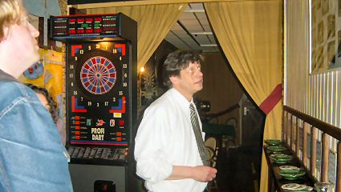
Aan de vooravond van Roda-Vitesse zal de voertaal hier Engels
zijn ;-)